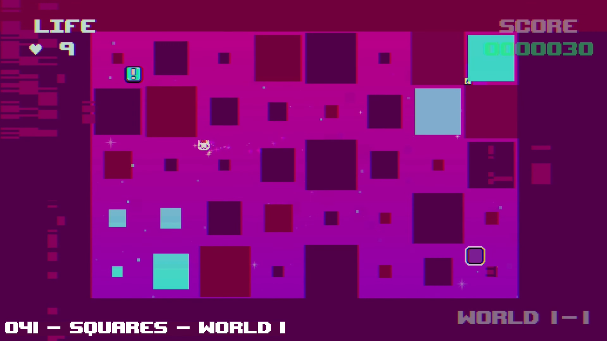
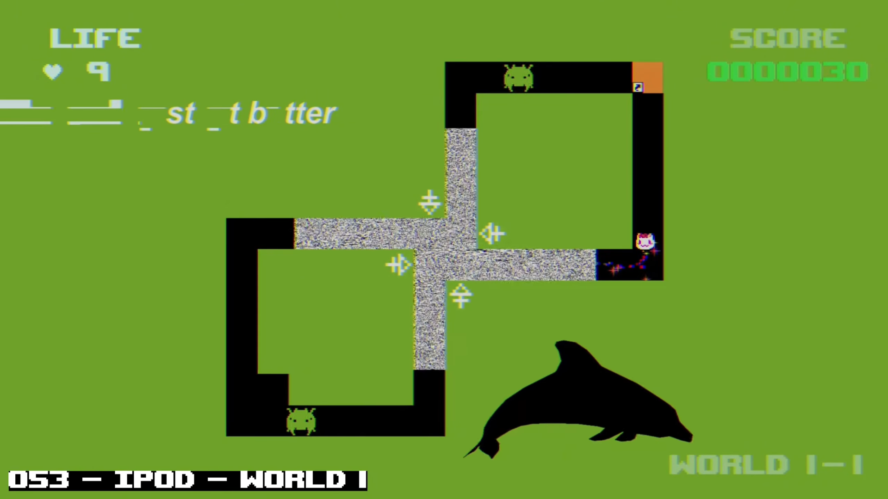
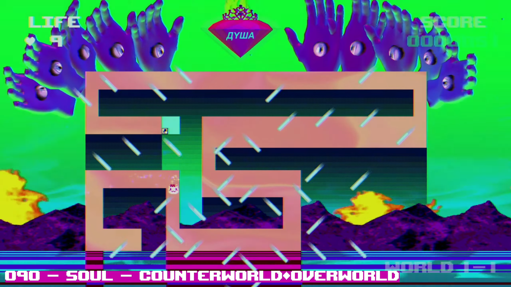

Sobre o jogo:
PUSS! é um jogo extremamente psicodélico e surreal no
qual o jogador controla um gato chamado Puss, que acaba entrando
acidentalmente em uma antiga televisão de tubo e sendo levado para uma
dimensão completamente caótica.
Preso nesse mundo estranho, Puss precisa atravessar diferentes
dimensões e sobreviver a uma série de fases cada vez mais absurdas.
A história utiliza uma narrativa propositalmente surreal, misturando
personagens estranhos, imagens perturbadoras, humor absurdo e uma
atmosfera que parece uma viagem psicodélica através da internet.
Imagens:


Gameplay e Trailer:
Trilha sonora:
- Nome da faixa: You alone.
- Número da faixa: 112.
- Nome da faixa: Vodka.
- Número da faixa: 40.
- Nome da faixa: Dollar.
- Número da faixa: 79.
Informações:
- Lançamento: 2018
- Desenvolvedora: teamcoil
- Publicadora: teamcoil